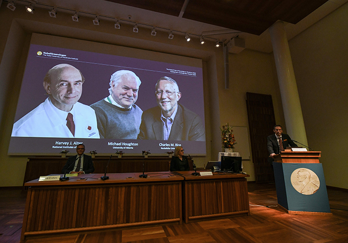

| 2020-10-5 | 来源：中国天气网 |
北京时间10月5日17时30分许，瑞典卡罗琳斯卡医学院在斯德哥尔摩宣布，将2020年诺贝尔生理学或医学奖授予美国病毒学家哈维·奥尔特（Harvey J. Alter）、英国生物学家迈克尔·霍顿（Michael Houghton）和美国病毒学家查尔斯·赖斯（Charles M. Rice），以表彰他们发现丙型肝炎（Hepatitis C）病毒。 奥尔特1935年出生在美国纽约，在罗切斯特大学医学院获得医学学位，并在斯特朗纪念医院和西雅图大学医院接受内科训练。1961年，他加入美国国家卫生研究院(NIH)担任临床助理。在乔治城大学工作了几年后，奥尔特于1969年回到NIH，加入临床中心的输血医学系，担任高级研究员。 新冠疫情让人类对流行病以及公共卫生有了更深刻的认知。截至目前，除中国外全球累计新冠确诊病例已超3500万，累计死亡病例超过103.7万。作为全球著名的病毒学家之一，奥尔特日前在接受澎湃新闻记者的独家问答时，还不是诺奖得主。“在没有疫苗的情况下，我们知道戴口罩和保持社交距离能有效阻止病毒扩散，但是在美国有很大一部分人不这么做，他们拒绝佩戴口罩，其中包括我们的总统（特朗普）。”
值得注意的是，美国总统特朗普10月2日凌晨证实他与夫人梅拉尼娅感染新冠病毒，当天傍晚被送往沃尔特·里德国家军事医疗中心接受治疗。

当地时间10月5日下午，美国总统特朗普在社交媒体发文表示，将于美东当日18：30出院，感觉真的很好！特朗普还说，不要害怕新冠，不要让它支配你的生活。感觉比20年前好多了！该消息公布18分钟后，纽约州长科莫在社交媒体发文请大家认真对待新冠。他说，要戴口罩，20.8万人因新冠病毒丧生，很多康复者也因此有长期后遗症。 奥尔特在接受采访时提到，隔离政策对经济产生了影响，所以在保持社会正常运转和挽救生命之间很难去做好平衡，“在完全阻止病毒之前我们应该有一个很好的计划，以及知道要做什么。” 奥尔特强调，疫苗可以给我们带来希望，但还有太多的不确定性。“我们不知道疫苗对免疫系统的影响，包括不知道T细胞如何免疫应答，也不知道病毒最终在体内如何被中和，不知道疫苗有效性能持续多久，不知道病毒突变后的影响。” 在新冠疫情影响下，全球疫苗开发速度之快全所未有。今年8月11日，俄罗斯卫生部注册了由“加马列亚”流行病与微生物学国家研究中心研制的“卫星V”新冠疫苗，这是全球第一款注册的新冠疫苗。奥尔特在接受采访时表示，“但是我们需要更多的研究来验证疫苗有效性，而且这种疫苗的有效性可能并不是一成不变的，可能需要每年开发出新的有效疫苗。” 此外，他对疫情的发展并不乐观，“我们也不知道这种病毒何时又会再次暴发，也许今后这种病毒将会成为我们每年都需要去应对的季节性病毒。”